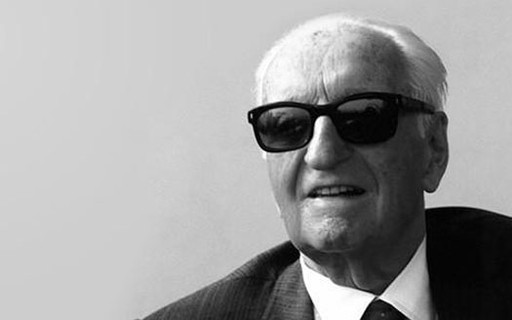

Koenigsegg Gamera
Gustavo A. Godoi, publicado em 04 de março de 2020

Koenigsegg gemera é um supercarro para a família capaz de chegar a 400 km/h, mais rápido que um fórmula 1.
São 1.700 hp, o equivalente a 1.723 cv. A marca diz que o torque equivale a 1,27 megawatt de energia. A grosso modo, isso sustentaria o consumo energético de dezenas de casas.
Conheça o novo Peogeot 208
Gustavo A. Godoi, publicado em 04 de março de 2020
A Peugeot quer provocar uma reviravolta no segmento de hatches compactos apostando as suas fichas no novo 208, lançado na Europa no ano passado e já em fase de produção na Argentina para estrear no Brasil ainda no primeiro semestre, provavelmente em maio.
A marca francesa acredita na estratégia usada há 20 anos com o 206 para voltar a se destacar no mercado brasileiro: surpreender a concorrência com um produto inovador em design e tecnologia.
A lenda Mazda 787B
Gustavo A. Godoi, publicado em 04 de março de 2020
{kind=link}
{kind=link}
{kind=link}
O Mazda 787B é um protótipo de corrida da Mazda que possui uma velocidade máxima de 358 km/h, partindo dos 0-100 km/h em 3 segundos. Possui 700 CV, 9000 rpm e pesa 830 kg. Foi o primeiro e único veículo de corrida a vencer as 24 Horas de Le Mans utilizando um motor rotativo Wankel, no ano de 1991.
O Mazda 787, que apareceu em 1990, era, por si, uma evolução do 767 e do 767B, que tinham corrido em Le Mans desde 1988.
Quem sou eu:
Me chamo Jorge Luiz, sou um afixionado por carro desde criança. Por este motivo crei o SpecTurbo, o maior site automotivo da internet.
Posts populares
Formula 1 em 2021
Revendo o Ford Maverik
A paixão pelos modelos Italianos
Redes socias